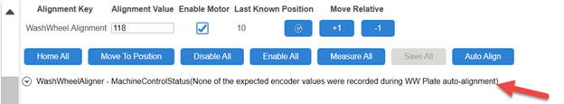

Troubleshooting Wash Wheel Plate Auto-Alignment Failures
This topic includes information about how to troubleshoot wash wheel plate auto-alignment failures when you select to auto-align using the Dispense Arm To Wheel alignment point in the Machine Control App. See Auto-Aligning the Wash Wheel for more information.
Safety Reminder
Servicing the DxI 9000 instrument involves potential risks for pinch and puncture, electrical shock, and exposure to hazardous materials. You must mitigate these risks by taking appropriate countermeasures. See Safety for more information.
Background information
The wash wheel plate auto-alignment operation uses wash wheel slippage detection to determine the plate alignment point. The auto-alignment procedure rotates the plate until the raised alignment feature on the plate contacts the substrate collet on the dispense arm, causing slippage. This process is repeated up to eight times with the dispense arm raised by one step each time. The wash wheel motor position at the time of slippage is saved for the alignment point calculation. At least three values are required in order to calculate the alignment point.
If the dispense arm alignment is too low or if there is a buildup of debris on the wash wheel plate / dispense collets, wash wheel plate slippage can occur before the alignment feature contacts the substrate collet. These events may cause the collets on the dispense arm to be in contact with the surface of the wash wheel plate and give false alignment values after a slippage event. If the wash wheel dispense arm alignment is too high, the alignment feature may miss the substrate collet entirely and result in no motor slippage.
- Slippage is detected at a plate position outside the expected range of values (nominal alignment: 121 +/- 10 steps)
- Slippage is not detected

| WashWheelAligner - MachineControlStatus | Meaning |
|---|---|
| None of the expected encoder values were recorded during WW Plate auto-alignment | The wash wheel plate auto-alignment operation ended without finding any usable motor positions for the alignment point calculation. |
| Not all of the expected encoder values were recorded during WW Plate auto-alignment | The wash wheel plate auto-alignment operation ended without finding enough (less than three) usable motor positions for the alignment point calculation. |
To troubleshoot wash wheel plate auto-alignment failures: